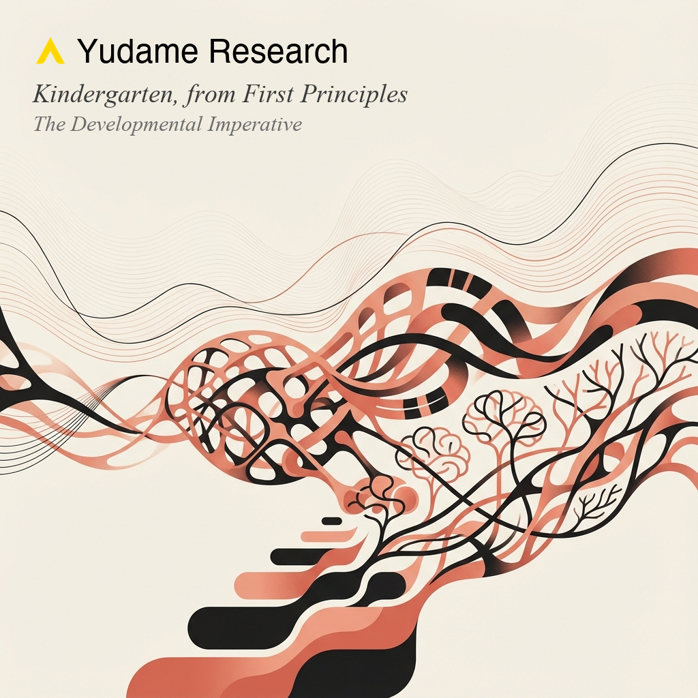
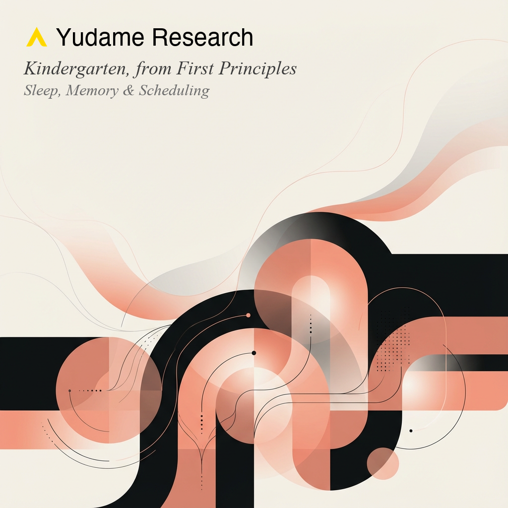
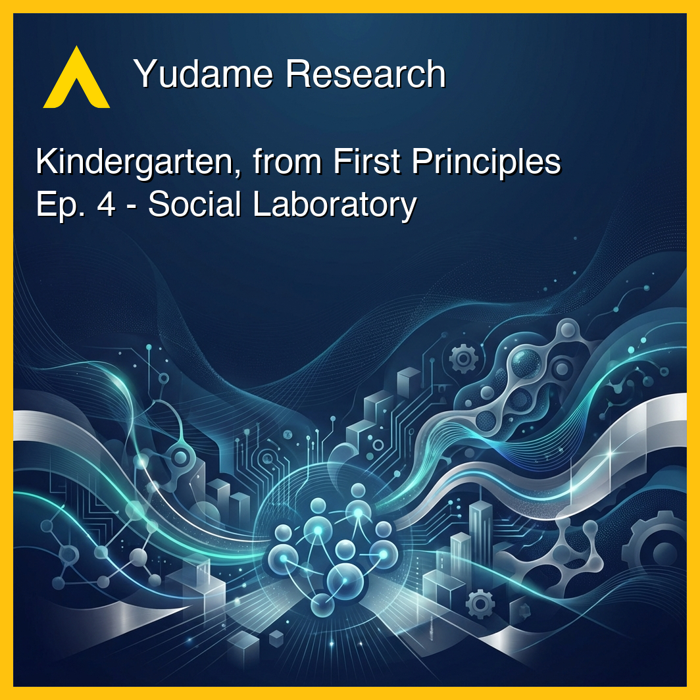
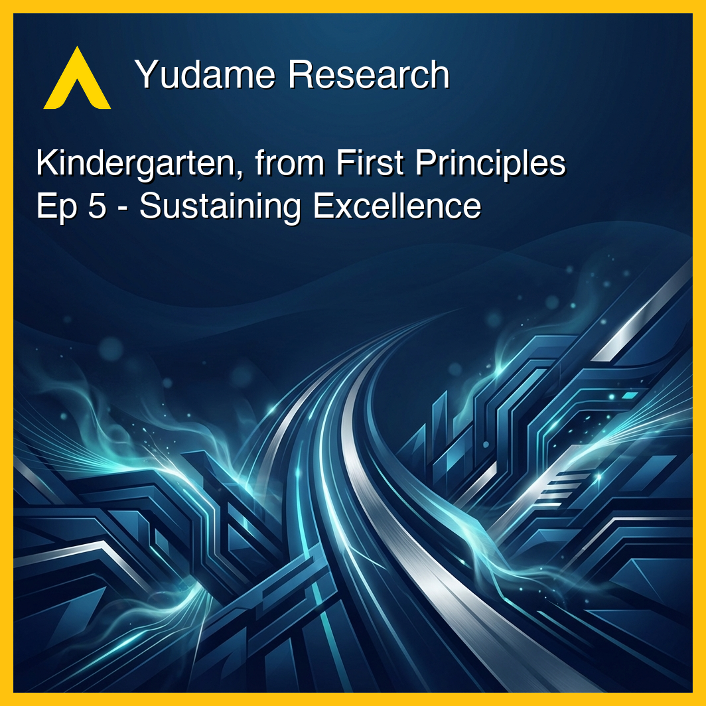
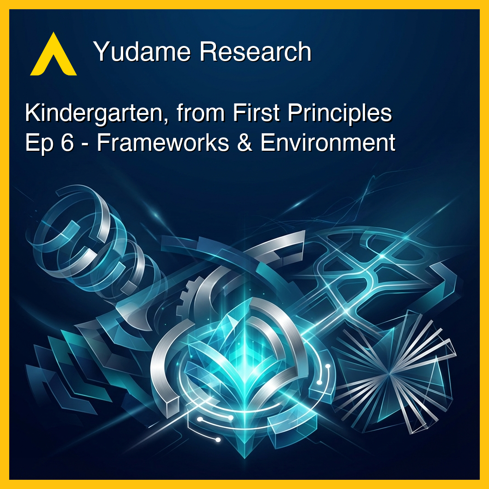

Kindergarten, from First Principles
Evidence-based early childhood education design for ages 4-6.
Episodes

What science says matters most at ages 4-6: executive function, self-regulation, and why process skills trump content.
More
The shocking Duncan study finding that early math skills—not social-emotional competence—are the strongest predictor of later academic success. How executive function acts as a cognitive amplifier across 25 lifespan outcomes, and the implementation paradox where Tools of the Mind produced effect sizes ranging from 0.0 to 0.8 based purely on teacher fidelity.
The neuroscience of play and why it may be the primary engine of development, not mere enrichment.
More
Strong neurobiological foundations meet surprisingly modest measurable gains (g ≈ 0.3-0.4). Guided play as the optimal approach outperforming both free play and direct instruction, the deprivation-enrichment asymmetry, the minimum effective dose (35+ minutes), and why at-risk children benefit most.

How pre-nap learning windows and sleep-dependent memory consolidation should shape daily schedules.
More
Missing a single nap causes irreversible memory loss in habitual nappers—overnight sleep cannot compensate. Rebecca Spencer's research reveals why the hippocampal "desk" fills up faster in young children, requiring strategic timing of declarative content before naps and procedural skills after.

Optimal group sizes, peer dynamics, and how intentional social friction builds essential skills.
More
The unique value of symmetrical peer relationships, why conflict is developmental fuel when properly scaffolded, effect sizes from major meta-analyses (d = 0.35-0.69), the ratio question (why 7.5:1 matters), the SEL paradox, and how individual differences require differentiated support.

Teacher wellbeing in intensive low-ratio settings: burnout, emotional labor, and support structures.
More
The intimacy paradox: close relationships create developmental magic for children but threaten sustainability. Research reveals 45-72% burnout rates, compensation as the strongest retention predictor, and Communities of Practice as the "silver bullet" for isolated practitioners.

Montessori, HighScope, and Reggio Emilia—comparative effectiveness and the search for universal principles.
More
Adherence to the curriculum matters more than which one you choose. The implementation fidelity effect, 40-70 year longitudinal data, the prepared environment paradox (structured freedom outperforms both rigid instruction and pure free play), and universal principles across frameworks.